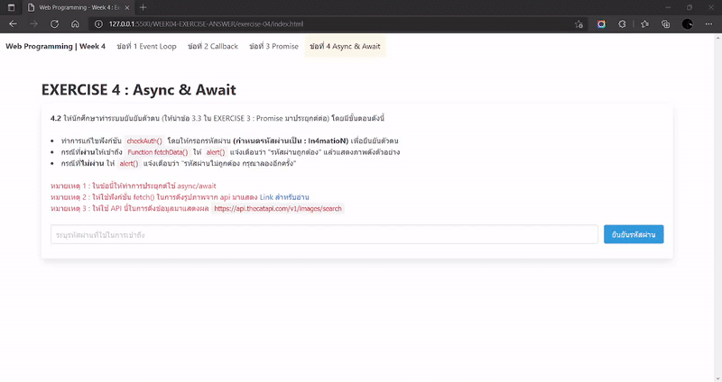

EXERCISE 4 : Async & Await
4.1 ให้นักศึกษาทำระบบยันยันตัวตน (ให้นำข้อ 3.3 ใน EXERCISE 3 : Promise มาประยุกต์ต่อ) โดยมีขั้นตอนดังนี้
checkAuth() โดยให้กรอกรหัสผ่าน
(กำหนดรหัสผ่านเป็น : In4matioN) เพื่อยืนยันตัวตนFunction fetchData() ให้ alert() แจ้งเตือนว่า "รหัสผ่านถูกต้อง" แล้วแสดงภาพดังตัวอย่างalert() แจ้งเตือนว่า "รหัสผ่านไม่ถูกต้อง กรุณาลองอีกครั้ง"หมายเหตุ 1 : ในข้อนี้ให้ทำการประยุกต์ใช้ async/await
หมายเหตุ 2 : ให้ใช้ฟังก์ชั่น fetch() ในการดึงรูปภาพจาก api มาแสดง Link สำหรับอ่าน
หมายเหตุ 3 : ให้ใช้ API นี้ในการดึงข้อมูลมาแสดงผล https://api.thecatapi.com/v1/images/search
ตัวอย่างของการแสดงผล
